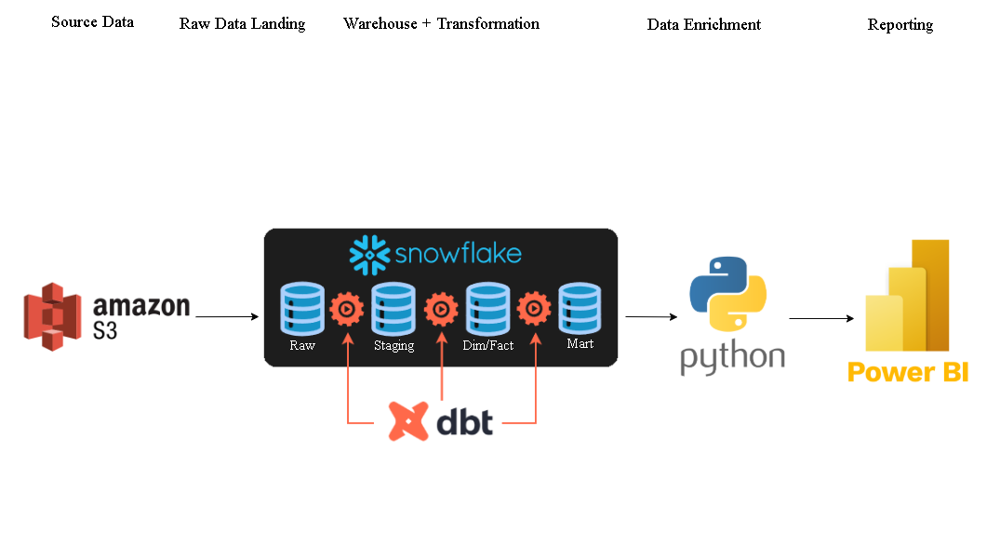
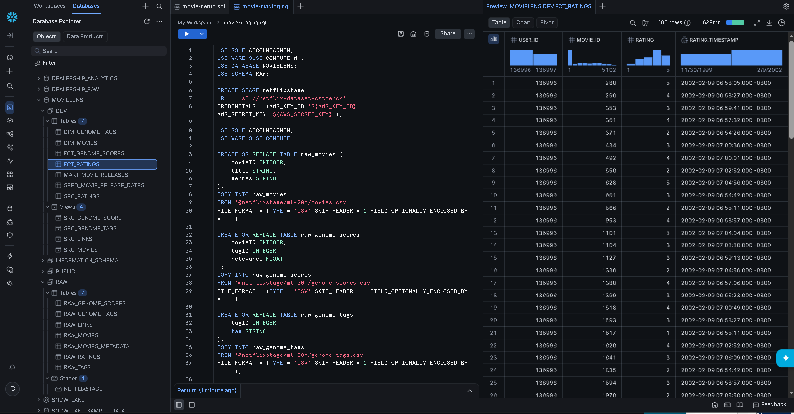
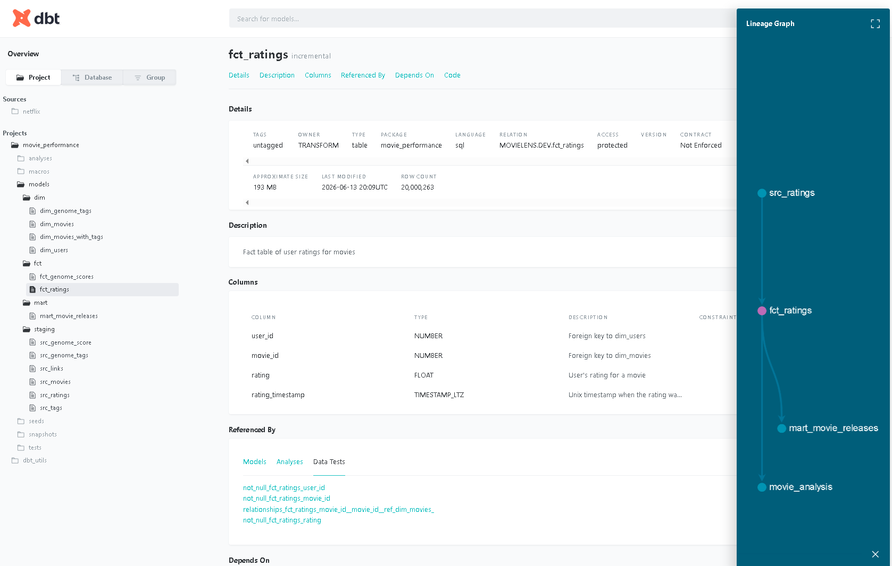
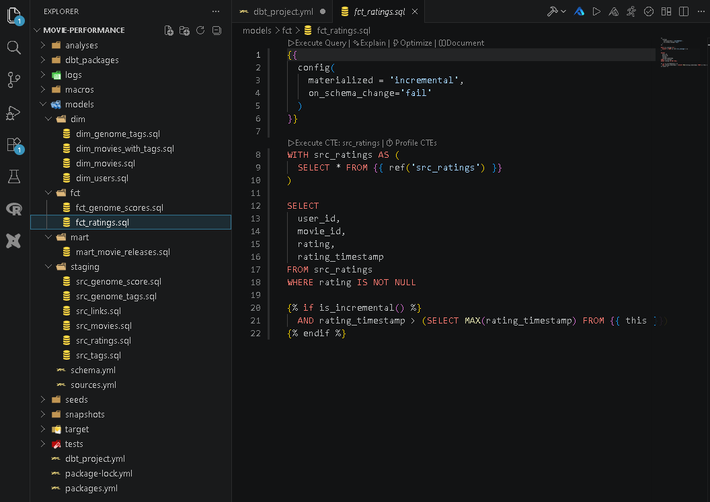

Movie Performance Analytics Engineering Pipeline
Movie Performance is an end-to-end analytics engineering project that converts raw public movie datasets into business-ready reporting. Raw CSV files are staged in Amazon S3, loaded into Snowflake, transformed with dbt into analytical models, enriched with Python-supported genre logic, and visualized in Power BI for revenue, rating, genre, budget, and return-on-investment analysis.
Executive Summary
From raw movie files to executive-style performance reporting.
This project demonstrates how public movie datasets can be organized into a modern analytics workflow. Movie ratings, tags, genre strings, release information, budget data, and revenue data are loaded into Snowflake, modeled with dbt, enriched with Python-supported genre logic, and delivered through an interactive Power BI dashboard.
Business Problem
Raw entertainment data is useful, but it is fragmented.
Streaming platforms, studios, and media analysts need visibility into how movies and genres perform across time. Public movie datasets contain ratings, genres, release dates, revenue, budgets, and tags, but the raw files are spread across separate CSV sources and are not directly structured for business reporting.
Which genres generate the highest revenue across decades?
How do actual revenues compare against projected revenue trends?
Which genres outperform the baseline profit expectation?
Which movies produce the highest revenue and return on investment?
Solution Overview
A cloud warehouse and dbt modeling workflow for movie analytics.
The pipeline stages raw public movie CSV files in Amazon S3 and loads those files into Snowflake through a configured Snowflake stage. dbt standardizes the raw tables, builds dimension and fact models, and creates a reporting mart. Python supports genre normalization and ordering logic, while Power BI consumes the curated Snowflake models for business-facing dashboard analysis.
Architecture Summary
Clear separation between raw storage, warehouse modeling, enrichment, and reporting.
The architecture keeps raw files, raw warehouse tables, dbt-built models, enrichment logic, and reporting outputs separated. This makes the pipeline easier to audit, rebuild, and extend because source-level data remains preserved while downstream models are shaped for analytical consumption.


Analytics Engineering Workflow
Layered dbt modeling from raw files to reporting marts.
dbt, which stands for data build tool, organizes the transformation process into source/staging models, dimension models, fact models, and a reporting mart. Source and staging models standardize raw field names and data types. Dimension models define analytical entities such as movies, users, and genome tags. Fact models represent measurable events or metrics such as ratings, genome scores, and movie metadata. The mart layer produces reporting-ready outputs for Power BI.
Standardizes raw MovieLens-style files and prepares clean model references.
Builds analytical entities for movies, users, movie tags, and genome tags.
Models ratings, genome relevance scores, revenue, budget, release, and return-on-investment data.
Creates a reporting-ready movie release model with explicit release metadata availability logic.
The fct_ratings model is configured as an incremental model, which means it can process only newly added rating records during future runs instead of rebuilding the full ratings table every time. That design is useful for larger rating datasets because it supports a more scalable refresh pattern.
The dbt project also includes visible documentation and project-organization proof. The lineage screenshot shows how the rating source model flows into the incremental fct_ratings model and downstream reporting models. The model-structure screenshot shows the project organized into dimension, fact, mart, and staging folders, with the incremental rating model open in Visual Studio Code.


Python Enrichment Layer
Genre logic prepared for consistent analysis.
Python supports genre normalization and enrichment logic using pandas and a manually defined genre hierarchy. This helps convert raw genre strings into a more consistent analytical structure for dashboarding and genre comparison across movie categories.
Dashboard and Reporting Layer
Business-facing Power BI reporting built from curated Snowflake models.
The Power BI dashboard presents movie performance through executive-style key performance indicators and supporting visuals. The report tracks movie count, average rating, average revenue, average budget, average return on investment, revenue by decade, revenue by genre, movie-level revenue and return on investment, and profit performance against a baseline.
Skills Demonstrated
Practical analytics engineering capabilities across the modern data stack.
- Cloud raw data storage using Amazon S3 for source CSV files.
- Snowflake warehouse setup with raw and development modeling schemas.
- Bulk loading raw CSV files into Snowflake using stages and load commands.
- dbt source modeling, layered transformations, and dimensional model design.
- Incremental dbt modeling for scalable rating fact table refreshes.
- Python-based genre normalization and enrichment support.
- Power BI dashboard development for revenue, ratings, genre, budget, and return-on-investment analysis.
- Credential hygiene and public repository security practices using placeholders and external configuration.
Final Project Impact
A complete supporting analytics engineering portfolio project.
Movie Performance demonstrates how raw public movie datasets can be converted into a business-ready analytics product. The project shows practical experience with cloud raw file storage, Snowflake warehousing, dbt transformations, dimensional modeling, incremental refresh logic, Python-supported enrichment, and dashboard storytelling in Power BI.
Full setup instructions, complete model lists, Snowflake scripts, dbt configuration, Python workflow details, and security notes are available in the GitHub repository for technical reviewers who want to inspect the build in greater depth.